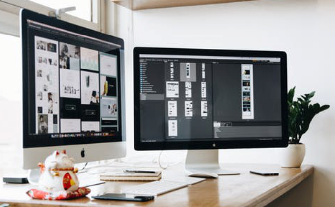

Belajar Desain Grafis
Feb 12, 2007Views : 3,487,497

Tugas utama seorang desainer grafis adalah dapat mengkomunikasikan pesan dari brand/produk klien kepada target marketnya secara tepat.
Namun, disamping itu kemampuan komunikasi juga dibutuhkan untuk dapat mempresentasikan, meyakinkan hingga melakukan persuasi terhadap klien
tentang suatu ide.
Belajar akan lebih cepat dan lebih berhasil jika kamu memiliki rasa ingin tahu yang besar. Banyaklah bertanya pada diri sendiri saat kamu
mencoba mendesain sesuatu. Kamu takkan bisa berjalan jauh di dunia ini, jika kamu tak memiliki rasa ingin tahu yang besar. Seorang desainer
grafis harus mau mencoba untuk melihat diluar konteks, mengekplorasi gambaran besar hingga detail-detail terkecil sekalipun.
Karakter yang sangat penting saat kamu harus mencoba hal-hal baru yang mungin belum pernah dicoba sebelumnya. Selain itu, kemampuan
ini juga akan menolong kamu untuk dapat menerima kritik dengan cara yang sehat. Sehingga kemampuanmu dapat bertumbuh pesat.
Klien tak hanya menginginkan talenta bagus, mereka butuh seseorang yang dapat mereka percaya bahwa kamu adalah orang yang tepat
untuk memecahkan masalah mereka. Banyak desainer grafis mengerti tentang trend desain, namun gagal mengerti kebutuhan kliennya.
Akhirnya, banyak klien merasa percuma membayar mahal untuk sesuatu yang abstrak bahkan kebutuhan mereka tak dapat terpecahkan.
Software pertama yang banyak digunakan dalam dunia desain grafis adalah Adobe Photoshop. Adobe Photoshop memiliki keunggulan
dalam digital imaging seperti memanipulasi foto, mengganti latar belakang, menghasilkan gambar tiga dimensi, membuat rancangan desain
web dan masih banyak lagi. Pada awalnya kamu mungkin akan merasa sedikit kesulitan karena kamu masih asing dengan softwarenya.
Namun, seperti yang telah disampaikan di atas, kamu harus memiliki yang namanya kesabaran. Perlahan tapi pasti, asalkan tekun,
kamu pasti akan dapat menguasai Adobe Photoshop.